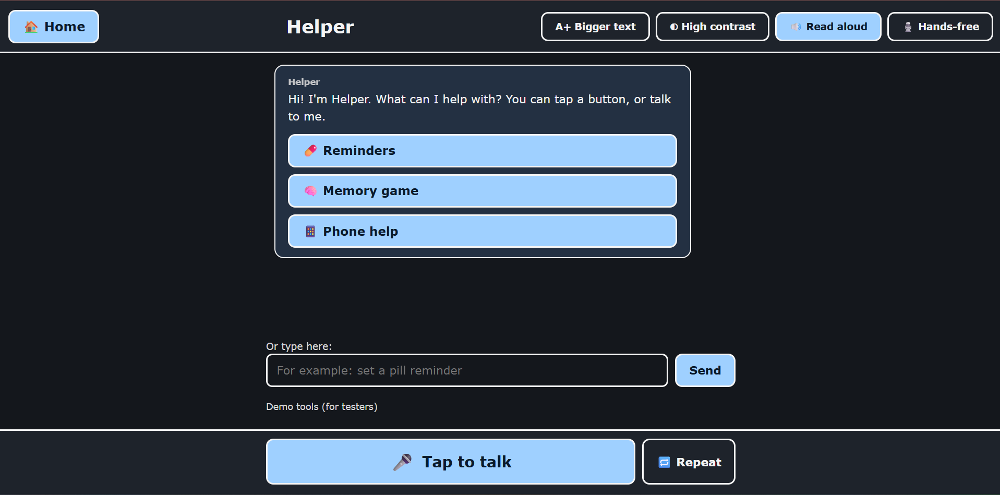

GP3: System Implementation, Integration & Containerization
Full functional development of the project's conversational AI assistant for older adults. We will be implementing the system, integrating various components, and containerizing the application for deployment.
Submission links
Core Agent Implementation
Helper uses Rasa CALM for multi-turn dialogue management and integrates its conversational flows with the reminder and caregiver-action services.
- Medication reminders
- Users enter a medication and time, confirm a repeat-back, and receive pill-time check-ins that record whether the dose was taken.
- Memory game
- Helper shows a hard-coded family or friend photo and asks the user to identify the person. Incorrect answers receive hints before the next attempt.
- Phone help
- Helper guides users through phone tasks one step at a time, including answering calls, changing text size, and calling family members.
Web/Mobile Interface
Helper uses a browser-based interface that is designed to be simple, readable, and usable by older adults on a desktop, tablet, or phone. Large, clearly labeled buttons provide reliable alternatives to typing or speaking.
- Core controls
- Users can set medication reminders, open the memory game, start phone-help tasks, and return Home from every branch.
- Conversation
- Typed and spoken messages are sent to the Helper assistant, while fixed replies and repeat-back questions keep the main actions predictable.
- Accessibility
- The interface includes larger text, high-contrast mode, read-aloud controls, repeat controls, and speech-to-text support in compatible browsers.
Containerization
Docker Compose runs Helper as separate web and assistant services on a private internal network. This keeps setup consistent across macOS, Linux, and Windows and makes the prototype straightforward to start or stop.
- Web service
- An unprivileged nginx container serves the browser interface and forwards the chat request to Rasa.
- Assistant service
- A Rasa Pro container runs the conversational flows and action server, with a model trained during the image build.
- Persistent data
- A named Docker volume stores reminders, dose records, and simulated caregiver alerts between runs.
- Deployment port
- Only the web service is published on port 8080 by default. Rasa's internal API port is not publicly exposed.
Helper Introduction
Helper is a talking assistant for adults over 70. It reminds people to take their pills and tells a caregiver if a dose is missed, plays a family-photo memory game, and gives step-by-step phone help. Every answer is short, can be read aloud, and comes with big buttons.
Helper is built by the Pelmanists (Caden Dirnberger, Salvador Lomeli Rodriguez, and Ethan Bucy) for AI 380, Human-AI Interaction, at Willamette University, Fall 2026. This repository is our GP3 prototype. It is based on our GP2 needfinding.
1. Quick start
Requirements:
- Docker Desktop or Docker Engine with Compose v2, running.
- At least 4 GB of memory for Docker. Helper's Rasa server uses about 0.9 GB while chatting and is capped at 2 GB; the web server uses about 10 MB.
- About 6 GB of free disk space. The Rasa Pro image is about 1 GB to download and 4.7 GB unpacked.
- Internet access for the first build and for the AI model while Helper runs.
- A free Rasa Pro licence.
Start Helper on macOS or Linux:
cp .env.example .env
# Add the licence after RASA_LICENSE=, without quotes or angle brackets.
./pelmanist-upThen open http://localhost:8080. Stop Helper with ./pelmanist-down.
The first start downloads Rasa Pro and trains Helper's model inside the image. This took about 3 minutes from scratch and about 1 minute for later rebuilds on our machines. Reminders are kept between runs.
On Windows, create .env as above, then run:
docker compose up --build -dStop the application with docker compose down. The scripts also work in WSL or Git Bash.
2. Access credentials
| Credential | Purpose | Required? | Where to get it | Where it goes |
|---|---|---|---|---|
RASA_LICENSE | Runs Rasa Pro and the key for Rasa's free hosted AI model | Yes | A free Rasa Pro Developer Edition licence from rasa.com or the team's private licence | .env; never commit it |
| Login | No accounts. Each browser gets a random user ID. | No | Demo tools → Start as a new user | Not applicable |
| Other API keys | None | No | Not applicable | Not applicable |
The scripts accept the older name RASA_PRO_LICENSE. Every setting is listed and commented in .env.example.
3. Try it (5 minutes)
- Set a reminderTap RemindersEnter “Test pill A” and a time such as “8 in the morning.” Use made-up medicines only.
- Check itConfirm the repeat-backCheck the pill and time, then tap “Yes, that's right.”
- Correct itSet it in one messageSay or type “remind me to take vitamin D at 8 in the morning,” then change it to 9 AM.
- Review remindersAsk what is scheduledSay or type “what are my reminders?”
- Test pill timeOpen Demo toolsTap Simulate pill time, answer that the pill was not taken, and see the simulated family notification.
- Test fallbacksTry two unknown messagesFor example, enter “blorp fizzle wug,” then “zzzq plim snorf.”
- Try the other tasksMemory game and Phone helpIdentify a photo, ask for a hint, or reword one of the phone-help steps.
- Check accessibilityTry the controlsUse bigger text, high contrast, read aloud, and repeat.
Every branch ends at “Anything else?” with the same choices, and Home always returns to the start.
4. Scripts
| Script | What it does | Deletes | Keeps |
|---|---|---|---|
pelmanist-up | Builds and starts Helper, waits until healthy, and prints the URL. | Nothing | Everything |
pelmanist-down | Stops Helper and works without a licence. | Containers and network | Reminders and Docker images |
pelmanist-down-super | Deletes Helper and all project data locally and, if configured, on the live deployment. | Project containers, volumes, network, images, and local caches | .env, tracked files, and other Docker projects |
All scripts are safe to run twice and print help with --help. pelmanist-down-super only finds Docker objects labeled com.docker.compose.project=pelmanist. It lists sizes first and then asks for confirmation.
--dry-runlists what would be deleted.--yesskips the confirmation prompt.--local-onlyskips the live deployment.
For live deployments, set PELMANIST_LIVE_TARGET in .env:
- Empty
- No live deployment is configured.
docker:<context>- Runs teardown against a Docker server or VM reached through a Docker context.
codespaces- Deletes the Pelmanists/gp3 GitHub Codespace with the GitHub CLI.
5. How it works
Browser → localhost:8080 → nginx
↓
/api/webhooks/rest/webhook → Rasa:5005
↓
Rasa Pro + actions
↓
tutorial-llm.rasa.aiOnly port 8080 is public; Rasa's port 5005 is not published and Rasa's HTTP API is off. The nginx server serves the web files and forwards one chat endpoint.
pelmanist-rasa:localuses Rasa Pro and trains the model while the image is built. The licence is provided through BuildKit secret so it is not stored in the image.pelmanist-web:localuses unprivileged nginx.- Reminders, dose records, and simulated caregiver alerts are stored in SQLite on the
pelmanist_helper-datavolume. - Conversations remain in memory and disappear when Rasa restarts.
- Pill times use
HELPER_TIMEZONE, which defaults toAmerica/Los_Angeles.
6. The AI model
Helper uses Rasa CALM. Flow files decide what Helper does and says. The language model interprets natural language and turns it into commands such as “start the reminder flow” or “the pill is vitamin D.” Replies stay fixed so medicine names and times are repeated exactly.
The default model is Rasa's hosted tutorial model, rasa/command-generator-llama-3.1-8b-instruct. It is best-effort and requires RASA_LICENSE. The custom prompt adds a “cannot handle” option so two misunderstandings can trigger the family fallback.
Button taps do not require the model. If the model is unavailable, Helper explains that it had a problem and keeps its three main buttons available; typed and spoken answers may not be understood until service resumes.
To switch models, change the model_groups entry in endpoints.yml, add the required API key to .env, pass it to the Rasa service, and rebuild.
7. Troubleshooting
| Problem | What to do |
|---|---|
| Docker isn't running | Start Docker Desktop and wait for the Engine before retrying pelmanist-up. |
| No Rasa licence found | Copy .env.example to .env and add the licence after RASA_LICENSE= without quotes or angle brackets. |
| Licence error | Request a new free licence if the licence is wrong or expired. |
| Port 8080 is in use | Set PELMANIST_PORT=8090 in .env, run the start script again, and open the new port. |
| First build is slow | The initial download is about 1 GB; later starts are faster. |
| Typed or spoken answers fail | Rasa's hosted model may be unreachable. Buttons still work; try again later. |
| Windows line-ending error | Clone the repository again so .gitattributes applies the correct script line endings, or use Docker Compose directly. |
| Microphone does nothing | Use Chrome, Edge, or Safari over localhost and allow microphone access. Typing remains available. |
To inspect Rasa logs, run docker compose logs rasa.
8. Privacy
- Reminders, dose records, and simulated caregiver alerts stay in SQLite on the Docker volume. They are keyed to a random browser ID and contain no account or contact information.
- To interpret a message, Helper sends the recent conversation, flow descriptions, and current slot values, including medicine names and pill times, to Rasa's hosted AI model.
- The browser's Web Speech API may process speech on-device or send audio to a browser-provider service, depending on the browser.
- Rasa logs are at INFO level and do not include prompts. Rasa telemetry is disabled.
- Testing uses made-up medicines only.
Known privacy documentation gap: the in-app page currently says reminders stay on the Helper server only. While a hosted model interprets messages, relevant data may also leave the server, and that page is being updated.
9. Known limitations
- Caregiver alerts are simulated. They are stored and shown as “Family notified,” but no SMS or call is sent.
- With the AI model unavailable, only button paths work.
- FAQ answers are fixed. Health questions are directed to a doctor or pharmacist instead of an embeddings-based search.
- The free model is small and can misidentify a flow. Button paths remain reliable.
- In-progress conversations are lost when Rasa restarts, while saved reminders remain.
10. Future work
- Allow a caregiver to upload real family photos.
- Add real SMS or caregiver-app notifications.
- Create a public live deployment for GP4.
11. Development without Docker
Use Python 3.11 and keep the virtual environment outside iCloud-synced folders:
python3.11 -m venv ~/.venvs/gp3
~/.venvs/gp3/bin/pip install rasa-pro==3.21.0
ln -s ~/.venvs/gp3 .venv
set -a; . ./.env; set +a
.venv/bin/rasa data validate
.venv/bin/rasa train
.venv/bin/rasa run --cors "*"In a second terminal, serve the web page:
python3 -m http.server 8000 --bind 127.0.0.1 -d webOpen http://localhost:8000/?api=http://localhost:5005. Without Docker, reminders are stored in .helper_storage/helper.db.
.venv/bin/rasa test e2e tests/e2e_test_cases
.venv/bin/rasa test e2e tests/offline_e2e --endpoints endpoints.offline.ymlTo test an outage in Docker:
docker compose -f docker-compose.yml -f docker/docker-compose.offline.yml up -d --wait
./pelmanist-up12. Credits
- Rasa Pro 3.21.0 Developer Edition and Rasa's hosted tutorial model.
- nginx, Docker, and Docker Compose.
- The browser's Web Speech API for speech-to-text and read-aloud.
- ShellCheck and Playwright for testing.
Screenshot

Team contribution breakdown
Individual contribution statements are submitted privately on Canvas.
| Member | Main contributions | Share |
|---|---|---|
| Caden Dirnberger | GP3 journal and help with rasa agent development | About 1/3 |
| Salvador Lomeli Rodriguez | Web Interface and rasa agent development | About 1/3 |
| Ethan Bucy | Containerized Deployment and Technical README | About 1/3 |